Click a highlighted definition to read it here without losing your place. Follow section numbers alongside the original PDF.
Find lecture practice in this chapter (1)
Expand a practice panel for its example, Mermaid flow, and self-check.
Chapter cheat sheet
The main idea: An interpreter gives meaning to an expression by recursively reading its syntax tree in an environment.
| Key term | Concise meaning |
|---|---|
| Abstract syntax tree (AST) | Structured data representing program syntax, separate from its result. |
| Environment ρ | A mapping from variable names to their current values in this pure language. |
| Lookup | Finds a variable’s most recent binding; an absent name is an error. |
| Shadowing | A newer binding hides an older one within its scope. |
| Evaluation judgment | ρ ⊢ e ⇓ v states that e evaluates to v under ρ. |
Rule to remember: For let x = e1 in e2, evaluate e1 in ρ, then e2 in ρ[x ↦ v1].
Small example: let x = 2 in let x = x + 1 in x returns 3: the inner right-hand side sees the outer x.
How to solve problems:
- Inspect the AST constructor.
- Identify the environment required by each premise.
- Evaluate only required subexpressions.
- Combine values and report unbound names or invalid operands.
Common trap: Building an AST does not execute it. Extending an environment should not overwrite the saved outer context.
Read the chapter in the original PDF · Continue to the detailed sections
Syntax and code companion
Use the syntax reference to trace a symbol to its meaning and source.
Binding: let x = e1 in e2 · Runtime evaluation judgment · Lookup and map extension
Line-by-line code · An evaluator's LET case
OCaml fragment; AST constructors, eval, and association-list environment belong to the surrounding interpreter
| LET (x, initializer, body) ->Match course-language syntax, not an OCaml let being run directly.
let v = eval initializer env inEvaluate the initializer in the old environment.
let body_env = (x, v) :: env inPrepend the new binding; lookup must choose the nearest matching name.
eval body body_envEvaluate the body with the extension. Here eval has exp -> env -> value argument order.
Trace result: Binding x to the evaluated initializer changes the body's lookup context, not the initializer's.
Before you begin
Read in the PDF: Chapter 3, pp. 97–117. Goal: turn mathematical meaning into a recursive interpreter. Definitions: abstract syntax tree, environment, inference rule.
3.1 Syntactic Structure
This language contains constants, variables, arithmetic, a zero test, conditionals, and local bindings. Each syntax form becomes an OCaml constructor. For example, let x = 1 in x + 2 becomes LET("x", CONST 1, ADD(VAR "x", CONST 2)). The host language is OCaml; the tree is a program in the small language being interpreted.
An expression's outer constructor tells you which semantic rule to use. Its children correspond to that rule's premises. A variable contains a name, not its current value. The environment will supply the value during evaluation.
3.2 Semantic Structure
The semantic domain has integer and boolean values. The judgment ρ ⊢ e ⇒ v says that expression e evaluates to value v in environment ρ. Read it as an input/output contract: the expression and environment are inputs; the result is a language value, represented by an OCaml variant such as Int 3.
An expression may be syntactically valid yet lack a derivation: adding a boolean, using an unbound name, or testing a nonboolean condition are examples. An executable interpreter reports these failures explicitly.
3.2.1 Environment
An environment maps names to values. With an association list, the newest binding is placed first and lookup returns the first matching name. Extending an environment creates a new mapping; it does not change an older mapping used elsewhere.
ρ0 = []
ρ1 = (x ↦ 1) :: ρ0
ρ2 = (x ↦ 2) :: ρ1
lookup x ρ1 = 1
lookup x ρ2 = 2
This is shadowing. The older x still exists in the outer environment but is hidden by the newer x in the inner one. It becomes visible again when evaluation returns to an expression using the outer environment.
3.2.2 Inference Rules
For addition, evaluate both children in the same environment and require integer results. For a conditional, evaluate the condition and then exactly one branch. For let x = e1 in e2, evaluate e1 in the old environment, then e2 in its extension. The name x is not bound by this let inside e1.

View Mermaid source
flowchart TD
accTitle: Chapter 3 - derive the LET evaluator from its rule
accDescr: The right-hand side uses the old environment; only the body sees the new binding.
A["LET x = e1 IN e2, environment rho"] --> B["Evaluate e1 in rho to get v1"]
B --> C["Create rho2 = rho extended with x maps to v1"]
C --> D["Evaluate e2 in rho2"]
D --> E["Return the body's value"]
Trace: let x = 2 in let x = x + 3 in x returns 5. The inner right-hand side reads the outer 2 before the inner binding exists. Evaluating it after extending x would implement a different rule.
Follow the premises of the evaluation rule Lecture 5
- A let initializer uses the old environment; only its body uses the extension.
- A conditional evaluates its guard and one selected branch.
Source slides: p. 5 · p. 8 · p. 10 · p. 11 · p. 19 · p. 22 · p. 23
Practice with Lecture 5 · example, thinking flow, and self-check
Rule in context: ρ ⊢ e1 ⇒ v1; ρ[x ↦ v1] ⊢ e2 ⇒ v2; therefore ρ ⊢ let x = e1 in e2 ⇒ v2
Grammar and AST constructors · Runtime evaluation judgment · Lookup and map extension · Binding: let x = e1 in e2
Worked example: let x = 2 in let x = x + 1 in x evaluates to 3. The inner initializer sees the outer x; the final x sees the inner binding.
Thinking steps:
- Match the AST constructor.
- Evaluate the rule premises.
- Check required value shapes.
- Return the rule conclusion.

View Mermaid source
%%{init: {"flowchart": {"wrappingWidth": 600}}}%%
flowchart TD
accTitle: Lecture 5 reasoning route
accDescr: Numbered stages for applying expressions and environments.
N0["1. Match the AST constructor"]
N1["2. Evaluate the rule premises"]
N0 --> N1
N2["3. Check required value shapes"]
N1 --> N2
N3["4. Return the rule conclusion"]
N2 --> N3
Homework connection: HW2: constants, arithmetic, variables, IF, and LET. HW1 P12 provides a smaller evaluator.
HW2 thinking guide · Full homework map
Try it: Should both branches of IF be evaluated?
Reveal the explanation
No. Doing so can introduce errors or effects that the language does not require.
3.3 Implementation
Read in the PDF: pp. 114–117. This section already contains a worked interpreter in the PDF. The companion implementation below continues into Chapters 4 and 5, so you can see what changes and what stays the same.
Download the executable interpreter and checks. Run ocaml textbook_functional.ml.
The file's eval e env follows these rules: CONST returns an integer value; VAR looks up a name; arithmetic checks operand shapes; LET extends the environment; IF selects one branch. The unified Chapter 5 syntax uses EQUAL(e, CONST 0) for Chapter 3's zero test.
(* The essential LET branch in the complete evaluator. *)
| LET (x,a,b) ->
let v = go a env in
go b ((x,v)::env)
Worked trace from the chapter
The nested example on p. 117 first binds x to 1 and y to 2. The right-hand side of the final y binding temporarily shadows x with 2, producing 2 + 2 = 4. The final subtraction runs in the outer x scope, with x = 1 and the new y = 4, so it produces -3. The temporary x does not leak out of its own expression.

View Mermaid source
flowchart TD
accTitle: Chapter 3 - keep an inner binding from leaking out
accDescr: The final y receives four, but the final subtraction still uses the outer x equal to one.
A["Outer environment: x=1, y=2"] --> B["Evaluate new y's right-hand side"]
B --> C["Inside that expression only: x=2"]
C --> D["Compute x+y = 4"]
D --> E["Return to outer scope; bind y=4"]
E --> F["x-y = 1-4 = -3"]
Check the interpreter: test an unbound name, nested shadowing, and a conditional whose unchosen branch would fail. A correct conditional must not evaluate both branches.
Homework connection: HW2 retains these cases and extends the semantic domain. Next: Chapter 4.